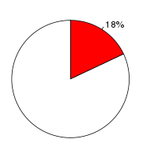
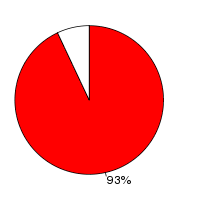

Medaka (Oryzias latipes, MEDAKA1) and Stickleback(Gasterosteus aculeatus, BROADS1) were aligned using the BlastZ alignment algorithm (Schwartz S et al., Genome Res.;13(1):103-7, Kent WJ et al., Proc Natl Acad Sci U S A., 2003;100(20):11484-9) in Ensembl release 41. Medaka was used as the reference species. After running BlastZ, the raw BlastZ alignment blocks are chained according to their location in both genomes. During the final netting process, the best sub-chain is chosen in each region on the reference species.
Full list of pairwise alignmentsNumber of alignment blocks: 401533
| Genome coverage(bp) | Coding exon coverage (bp) | |
|---|---|---|
| Medaka |  |  |
| 158,565,879 out of 868,983,502 | 28,116,717 out of 30,193,605 | |
| Stickleback |
|
|
| 131,566,787 out of 461,533,448 | 28,818,176 out of 32,649,418 |